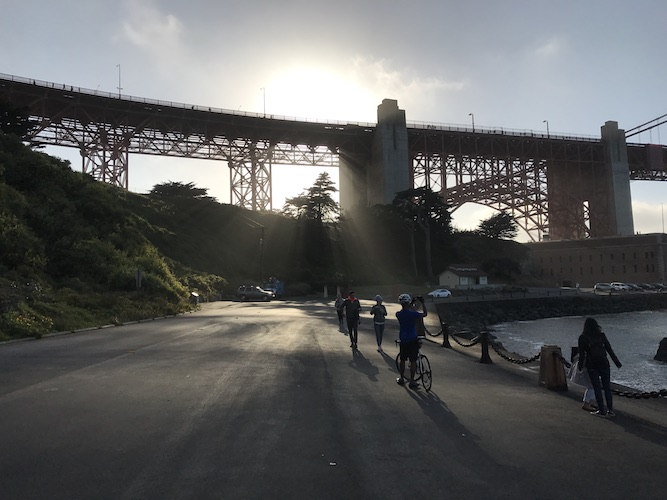
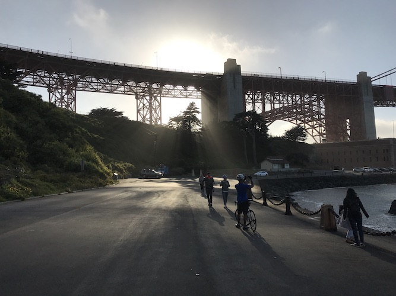
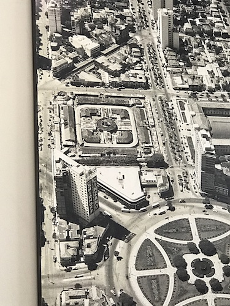
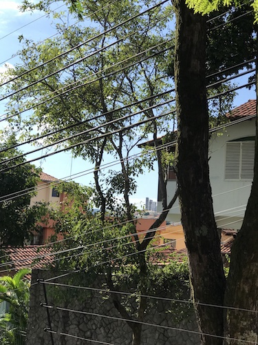
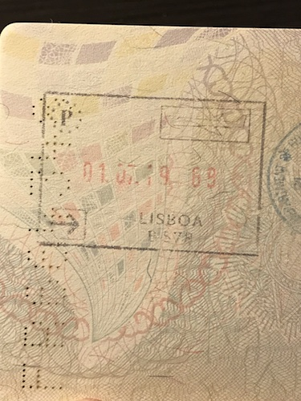
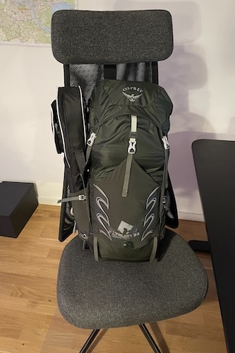
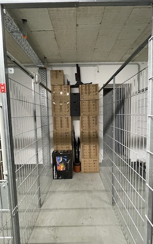
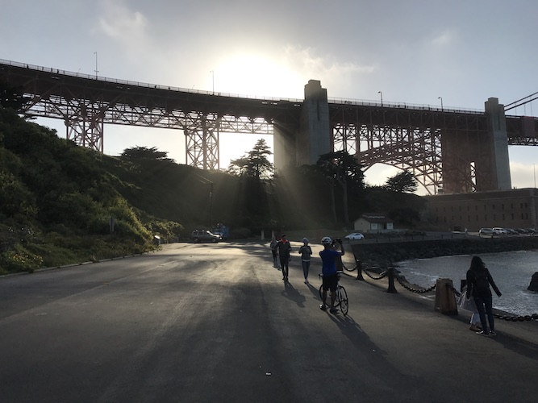
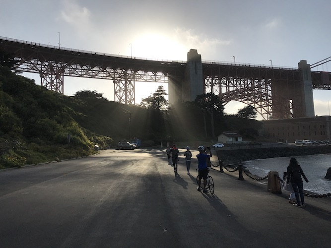

How to become an adult
Be born with unbelievable luck. Have your mother teach you the value of school, of knowledge.
Have her realize the impact of personal computers when personal computing was a foreign concept in the small city you were born in.
Don't realize the significance until much later of her investing in a computer for the house and having it brought over from a different state.
Fall in love with exploring the machine, navigate Windows menus for hours on end, before you even learned about the Internet.
Enjoy the extraordinary privilege of getting exposed to something so fun and that also can give you a job, at the age of 7.
Have your mom research the best high schools and encourage you to study and apply. Try for the informatics course and get approved.
Experience school without violence and without feeling like you have to put on a fake personality for the first time in your life.
Get even more into computers, learn to program, write mods for video games, meet people on Internet forums, improve your broken English.
For the required internship, find a job in a cool place with good people. Acquire a lifelong hate for Java at 17.
Barely study for university entrance exams, just like you barely studied for everything your entire life.
Barely get in. Fail to realize the significance of this and continue to slack on your studies.
Start doing open source work, meet inspired people from all over the world.
Get the incredible opportunity of an international internship in your second semester of university, working with amazing people on amazing projects.
Move to the Bay Area and discover that you can feel at home while being ten thousand kilometers away.
Discover that entire metro areas can breathe and live the things you're interested in.
Be the first intern to arrive and the last one to leave.
Make friends with a kind and optimistic roommate from a land you've never been to, who tells you stories of his continent.
Buy your first new bike, the first "real thing" you've ever bought.
Explore the nearby mountains. Enjoy every single minute of life.
Gain 20 pounds from the snack kitchen. Grow your hair out because haircuts are too expensive.
Go back to Brazil with your eyes shining with the vision of an incredible future, opened to the world.
When someone tries to mug you on the first day back, blame yourself for probably being too happy and aloof while walking on the street.
Go back to classes in university.
Realize all the classes feel like they're being taught in slow motion,
all your old classmates are a semester ahead,
your class schedule is a complete mess,
the whole world feels like it's grayscale,
and that you still have three more years of this until you graduate.
Fall into a depression that leaves you unable to study and work for months.
Sleep sixteen hours per day every day.
Wake up from your sickness not due to being recovered, but due to the urgency of money running out.
Money your family is now depending on.
Conflate this urgency for a cure and ignore your depression for years
Swallow all the difficulty of this responsibility because nobody deserves to shoulder this for you.
Limp through work and school. Prioritize work because it's more interesting and pays the bills.
Get kicked out of school for having grades that are too bad, for too long. Consider giving up entirely on school.
Realize a degree is your only way out of the country.
Try again, this time go for a course that's taught at night, so the schedule can't be as messed up as before.
It helps a bit, you find some renewed energy. Meet cool friends who help you stay focused on school.
Make a plan for graduation, lay out all the classes you have to take, how many you need to take per semester.

 

One day, start talking to the cool girl who you feel only attends a third of the classes.
Find out you take the same bus back home from school.
Lose yourself in every conversation, each bus ride a new amusement park.
Connect so deeply and so quickly you can't even tell when it started feeling like you were best friends.
Find yourself opening up about the darkest and most embarrassing aspects of your life without a hint of hesitation.
Hang out with careless intensity, throw each other completely into every moment together.
Have conversations so interesting and engaging that strangers around you introduce themselves to participate.
Discover entire new languages in locked eyes, in not so secretive smiles.
Notice how you want to be closer, how you're drawn to each other, how every conversation feels like an intimate secret, a beautiful connection.
Realize the effect you have on each other, and how much you enjoy it.
Kiss, and wonder why you haven't done this months ago.
Revel in a growing intimacy, count the minutes until you can see her again, walk her home and miss her as soon as the gate closes.
Feel the electricity of love running in your body, find yourself laughing for no reason, smiling at the day, the trees, the crowded bus, the traffic.
Share epiphanies. Go to festivals together. Travel to beautiful places, marvel at how much more intense life us under the love you share.
When she brings up the idea of moving in together, contain your gut reaction of saying yes.
Think about the risk, the expenses. Be incapable of creating any convincing arguments.
Run away together.
Live in a tiny room, walking over each other, and love every second of it.
Build warped furniture together. Make plans for the future, think about the next time you'll both run away again, when you graduate.
To distant lands, to build a new life and discover new worlds.
Make a deep mistake: let her question how loved, important, beautiful and cared for she is.
Allow this insecurity to grow, postpone indefinitely figuring out your feelings and fixing this.

Work and study as hard as you've ever had. Take as many classes as your semesters will fit, work in every break between them.
Feel energized by graduation getting closer. Feel exhausted at the end of every day.
Have no energy to do fun things on the weekends.
Have no energy to do anything but eating, working and sleeping.
Let depression slowly creep back in, masked by being so busy.
Focus even harder on finishing school and working to pay the bills.
Forget to focus on your relationship. Forget to protect it, care for it.
Neglect all other aspects of your life and health but work and school.
Travel together to another country for a week, her first time.
See her eyes being opened to the world like yours were, a new fire burning hot in her heart.
Notice yourself arguing about the same things again and again, and ignore your role in it.
Let cracks grow, because you're too tired to fix them.
Hope graduating and moving away together will fix things.
Lose a bit of all your hope every day. Forget the last time you felt relaxed, happy, not in a hurry.
Forget to take in the beauty of life. Forget how much more intense life can be, if you could just pay attention again.
Notice how she's getting more and more depressed. Feel powerless to help.
Get married in a most unceremonious way.
Both of you are too young and too cool to get married, but it's needed for immigration.
Graduate in record time.
Fight immigration bureaucracy for six months, waiting in limbo, not living life in this country you're about to leave behind.
Pack two lives in three suitcases and two bike boxes.
Move to Berlin without any of you speaking a word of German.


Feel scared every day. Jump straight into a maddening rush to work find an apartment, get phone numbers, bank accounts, health insurance.
Don't stop to consider how scared she must be, without a job, alone at home in this foreign land while you're working.
Squeeze in some city exploration on the weekends.
Together, find and fall in love with a cute apartment with large windows.
Slowly furnish and decorate your new place. Spend your entire savings by the time you feel more or less settled.
Approach a deadline at work. Fall into a hurried routine again.
Watch her get a new job. Feel so proud of her intelligence, her drive, her strength.
Don't celebrate her new job. Don't celebrate anything.
Just work, eat, worry about practical things, and explore the city a bit on weekends.
Love her so deeply you have no question you'll be together for a long time.
When she confronts you about your problems and asks you for help, for ideas, for participation in fixing them, have no answers to give.
Forget to pay attention to yourself and your relationship for so long you can't even say what the source of the problems is anymore.
Give in to hopelessness, let the smallest of setbacks turn your mood completely to the worse.
Visit home, separately.
Spend longer away from each other than you've had since you met for the first time.
Feel despair from not being able to fix this discomfort for so long.
Consider the only solution which requires no effort: breaking up.
Giving up.
Tell her maybe you two just can't find a way to be fully happy together anymore.
Break her heart, see her pain, and feel your entire body contort, disgusted at what you're doing.
When she doesn't give up, when she fights for you to be together, fail to react, to wake up.
Feel so numb you can't feel or express intensity anymore.
Break up with the most beautiful person you've ever met.
Help her move to a new place.
Watch the sadness in her eyes when you say good bye.
Feel utterly and completely lost.
Have no confidence that this is the right thing to do, but fail to find energy to do anything else.
Cry yourself to sleep.
Watch the days pass by on automatic. Do nothing but eat, sleep and work.
Visit her often. Don't talk about how hurt you are.
See her making progress, and try to use that as consolation, as confirmation that this is what's best for both of you.
Have your mom visit for summer. Open up about how sad you've been feeling.
Talk together, cry together, share your pains, your insecurities.
Realize how dumb you've been for bottling your feelings, for staying quiet, mindlessly dragging yourself forward one day at a time.
How easier it is to simply talk, open up, face your demons.
Realize you've done the same thing to the love of your life.
Discover the separation between your own depression and the relationship problems.
How long you spent mixing the two in your head and your heart.
Introspect every time you felt bad about being with her in the past two years.
Realize most of them had nothing to do with her, nothing to do with you two.
Remember all the beautiful things that she did, all the love and care she never stopped demonstrating, all the events that went by without celebration.
Be washed over by a wave of regret that makes you hate yourself, hate who you've been.
Hate that it's possible to lose your rationality for so long.
Hate that you've made her feel so miserable, that you've left her alone when she needed you so much.
Write her a letter, tell her things you should have told her a long time ago.
Apologize for making so many wrong choices. For being so blind.
Write her again, talk about how much love you still have inside of you.
How inspired you are again, how much you realize the significance and the beauty of what you can be together.
Arrange to meet and talk. Feel so much hope inside you, hope like you haven't felt in years.
Imagine how beautiful the future can be.
How completely in love you could be around each other again, how life itself can be brighter when you're together.
Be completely transformed by this newfound energy, this unending source of hope and beauty.
When you talk, notice her reticence, how careful she is with her words.
Notice how she avoids your eyes. Listen to her beautiful words.
Words of love, of hurt, of confusion, of uncertainty.
Realize her scars are still not healed.
Realize in the time it took you to be able to find yourself again, to find her again, she has met other people, she has found new love.
Feel jolts of pain in your entire body every time you think about the possibility of having lost this beautiful future that you started building.
Fight the pain with the hope you get from the other side of her reticence, the hope from her saying "I don't know" instead of "no".
Hold on to every single reservation shared by her, every hesitation.
Be energized by this hope every day.
Remember all the other aspects of your life you were neglecting.
Remember how much you like your friends.
How grateful you are for the new friends you've made in this new land.
Pay more attention to your health, to your sleep, to your plans for the future.
Start reading more again, reading poetry, reading philosophy.
Wake up and find your heart full of optimism every single day. Overcoming pain and saudade.
Feel the sun fade out and the world lose color every time you tell her good bye without finding more certainty.
Wake up the next day and find the same optimism and hope burning strong inside you.
Write five letters for each one you actually send.
Think carefully about each word you use. Get disappointed at how they fall short of capturing the beauty inside you.
Appreciate the friendship you're repairing, finding again.
Finally hear what you've been waiting for, that she wants to try again.
Be filled with so much love and happiness nothing in the universe could intimidate you.
A few days later find out she's changed her mind.
Experience hurt on a level you didn't know before.
Repeat this process several times in two months.
Within the pain, find your love again every time, burning strong and with the same certainty.
Hear from her that she's thinking about traveling to warmer places during winter with other people. She doesn't know for how long.
Remember the times you've talked about this idea before. Remember all the plans you started for such a trip, not knowing if you'd be with her.
Feel a hurricane of emotions, all terrible. Count how long you've been agonizing over the impending doom or bliss.
Spend each day with a new feeling. Numbness. Devastating sadness. Fury.
Slowly accept for the first time in months that you're going separate ways for a long time.
Put all the energy you can find into working out, progress on your exercises faster in a month than you have in the last year.
Force yourself to let go, to snap out of it. Feel the progress, slowly: the days becoming easier.
Look forward to the month you've been planning to spend with your friends in a warmer place.
Think about how good it'll be to get some sunlight, swim in the ocean, heal.
Every day, look around in your apartment and see her in every detail.
Remember a different story with her for every object in the house.
Hear her voice in the echos of the empty starway.
Every week, walk in this strange city you moved into together, and see her in every street, every train station, every park, river and lake.
Count the weeks until your planned trip and realize you can't stand being surrounded by these memories for so long.
Decide to leave earlier. Find people to sublet your apartment.
Watch the pandemic in Europe slowly get worse as summer comes to a close.
Hesitate too long to buy tickets. They double in price. Think about borders closing again.
Give up on the idea. Disappoint a friend.
Receive a message in a worried tone. Someone broke into her place, she needs a place to stay.
Rent a car and help her move into your place on the same day.
Watch her find a place for all her plants, appreciate how much she cares about it being just right.
With her help, make your apartment look nicer than it's ever been. Greener, cozier, more colorful.
Live together again without a hint of awkwardness or difficulty.
Enjoy simple walks,
going to the supermarket,
talking about the places you want to visit in the future,
how you want the next place you'll live in to be like,
showing each other the new music you've discovered.
Pay attention to her. See her sadness. Try to be there for her every day.
Be invited to join her travels away from winter. Say yes effortlessly. Be washed over by hope and love again.
Pack all your things into boxes. Put in a backpack everything you hope you'll need for the next months.
Travel to a beautiful place where they speak an ancient language and drive on the other side of the road.
Walk to the sea almost every day. Work outside. Feel the sea breeze and let it calm your heart.
Find intimacy and love again in each other's arms.
Spend an incredible weekend in a disappointing AirBnB with no wifi. Feel so light you could almost float.



Then, watch her get more distant. Notice patterns of warmth and coldness.
Feel deeply scared. Overthink everything you do or say. Grow into a state of whole body alertness.
Pay attention to every single detail around you. Everything she says, and doesn't say.
Find out her ex-boyfriend will be in the same island you're going to next.
Let this jealousy show, let it contaminate your days.
Feel powerless, small, fragile.
Watch as your happiness gets replaced with dread.
Feel your self confidence slip away. Compare yourself in unhealthy ways every day.
Start to build a hate for him, for what he represents.
Spend a month with your friends as you planned so long ago.
Enjoy their warmth, their happiness, their positive push. Enjoy a little bubble of normality in such a weird time.
At the same time feel so dreadful. So alone.
Notice how the periods of coldness stretch longer.
Live apart for a few days.
Spend nights awake imagining impending dreadful news.
Cross paths with a stranger. Get your fears confirmed by someone you just met.
Feel unsurprised. Feel disappointed and hurt.
Hear that she wants to be with you. That this time is different.
Like so many times before.
Overcome the fresh pain of rejection.
Believe her without a hint of doubt.
Feel the energy to try again, to do things right this time, burning in you as strong as it was in summer.
Get your heart broken again two weeks later. Hear her say you make her unhappy.
Feel the words resonate inside your brain, feel them stab your heart.
Buy a plane ticket back to Berlin before you can change your mind again.
Think about Berlin. Remember how much the city makes you think of her.
Remember all the happy memories from the places you visited together.
Remember all the places you still hoped to visit with her.
Wonder how you're going to be able to live in this city without her.
Spend an afternoon hiding a thousand photos from your phone. Cry the entire time.
Suffer every second of your last few hours before you leave.
Feel completely hopeless and lost.
Worry about how you'll find the energy to move on.
How long it'll take you to heal.
If some of these scars are permanent.
Be thankful for your friends, for the support they offer.
Be thankful for your family, for being able to count on them.
Write the story of the love of your life.
The story of two teenagers growing up together, living incredible dreams.
How many unforgettable and personality defining moments you've shared.
Realize you don't need to erase the sad parts.
You don't have to let the pain define you, rewrite your past.
You can be proud of your unmovable love, of the beauty that lives inside of you.
You can be proud of dreaming, and of trying your hardest to achieve those dreams.
You can be proud of believing, trusting, making yourself vulnerable.
You can reflect and learn from your mistakes without hating yourself.
Ring the bells that still can ring.
Forget your perfect offering.
There is a crack in everything.
That's how the light gets in.

 
